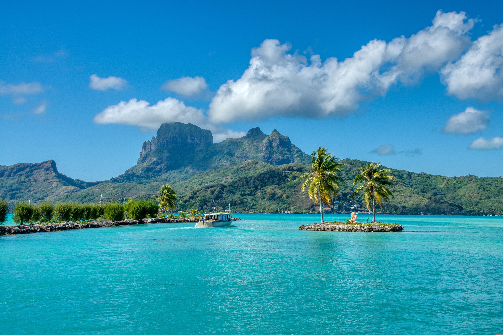
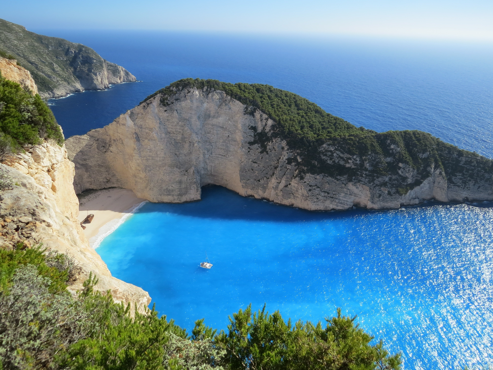
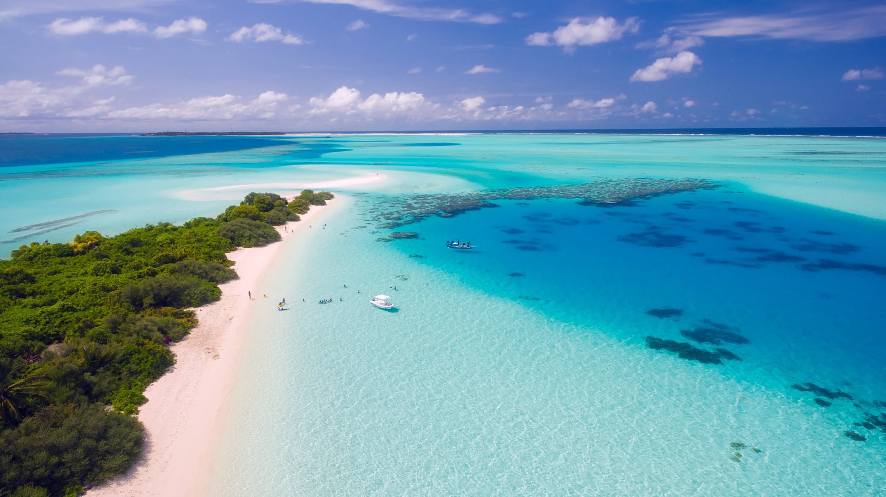

O arquipélago de Fernando de Noronha é o principal santuário ecológico do Brasil e um dos destinos de praia mais cobiçados do mundo. Localizado em Pernambuco, a cerca de 545 km de Recife, o destino é famoso por abrigar a Baía do Sancho (eleita várias vezes a melhor praia do planeta), além de uma vida marinha riquíssima que inclui golfinhos-rotadores, tartarugas e tubarões.
Maragogi, localizada no litoral norte de Alagoas, é carinhosamente apelidada de o "Caribe Brasileiro". Situada bem no coração da Costa dos Corais — a maior área de proteção ambiental marinha do Brasil — a cidade atrai viajantes do mundo todo devido ao seu mar calmo, morninho, de tons azul-turquesa inacreditáveis e, claro, pelas suas famosas piscinas naturais formadas por imensas barreiras de recifes.
O Parque Nacional dos Lençóis Maranhenses — recentemente titulado como Patrimônio Natural da Humanidade pela UNESCO — é um dos cenários mais espetaculares e surreais do planeta. Localizado no litoral do Maranhão, o parque combina uma imensidão de dunas de areia branca e fina que se movem constantemente com milhares de lagoas sazonais de água doce, cristalina e incrivelmente mornas.

Bora Bora é um verdadeiro paraíso tropical localizado na Polinésia Francesa, no coração do Oceano Pacífico. Cercada por uma lagoa de águas cristalinas em tons de azul e verde, a ilha encanta visitantes com suas praias de areia branca, recifes de corais e paisagens naturais deslumbrantes. É mundialmente famosa por seus luxuosos bangalôs construídos sobre as águas, proporcionando experiências únicas de hospedagem. Entre as principais atrações estão os passeios de barco, mergulho com peixes coloridos, observação de arraias e momentos de tranquilidade em meio à natureza.

A Praia de Navagio (também conhecida como Shipwreck Beach ou Praia do Naufrágio) é um dos cartões-postais mais famosos e fotografados de toda a Grécia. Localizada na costa noroeste da deslumbrante ilha de Zakynthos, no Mar Jônico, ela é mundialmente conhecida por suas falésias imponentes de calcário branco, águas em um tom azul-turquesa neon quase inacreditável e pela icônica carcaça enferrujada do navio MV Panagiotis, encalhado em suas areias desde 1980.

"Localizadas no Oceano Índico, as Ilhas Maldivas reúnem mais de mil ilhas coralinas repletas de uma rica biodiversidade marinha. Conhecido mundialmente pela exclusividade de seus resorts, bangalôs flutuantes e por ser um dos melhores pontos de mergulho do planeta, o arquipélago transforma qualquer viagem em uma experiência mágica e cinematográfica."
O projeto Viagem dos Sonhos foi idealizado como Atividade Integradora para consolidar os aprendizados teóricos da disciplina de Desenvolvimento Front-End em sala de aula. A proposta combina uma vitrine visual de destinos turísticos nacionais e internacionais com uma experiência de navegação simples e intuitiva.
O foco principal do exercício consistiu na aplicação de boas práticas em arquitetura de informação, hierarquia visual e semântica HTML5. Cada destino foi organizado para despertar o interesse do visitante por meio de fotografias de destaque e descrições objetivas sobre as atrações locais.
Além da estética, o website foi planejado para funcionar em formato one page (página única), permitindo que o usuário explore os destaques no carrossel, navegue pelos cartões informativos e abra detalhes adicionais em janelas modais sem precisar recarregar a página.
Estruturação baseada no sistema de grid flexível do Bootstrap 5, garantindo adaptação automática entre telas de smartphones, tablets e computadores desktop.
Integração coerente de barra de navegação recolhível, carrossel de imagens, cards alinhados e janelas modais para enriquecer a interatividade do usuário.
Uso de folha de estilos CSS externa para padronizar a altura das fotografias, aplicar cortes proporcionais e criar efeitos suaves de transição ao passar o mouse.